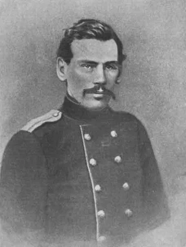

"Налог на роскошь – это своего рода общественно признанная плата за отказ от инвестиций в развитие в пользу сверхпотребления и тщеславия."
(Из статьи В.Путина)
"С 1 января 2012 года был сделан следующий шаг: денежное довольствие военнослужащих выросло практически в три раза.."
(Из газет)

— А вы, я думаю, теперь рады, молодой человек, что на двойном окладе? — сказал майор, после нескольких минут молчания, батальонному адъютанту.
— Как же-с, очень-с.
— Я нахожу, что наше жалованье теперь очень большое, Николай Федорыч,— продолжал он,— молодому человеку можно жить весьма прилично и даже позволить себе роскошь маленькую.
— Нет, право, Абрам Ильич,— робко сказал адъютант,— хоть оно и двойное, а только что так... ведь лошадь надо иметь...
— Что вы мне говорите, молодой человек! я сам прапорщиком был и знаю. Поверьте, с порядком жить очень можно. Да вот вам, сочтите,— прибавил он, загибая мизинец левой руки.
— Всё вперед жалованье забираем — вот вам и счет,— сказал Тросенко, выпивая рюмку водки.
— Ну, да ведь на это что же вы хотите... что?
…
— Ну-с, так вот мы считали, что нужно офицеру,— продолжал майор, со снисходительной улыбкой обращаясь к нам.— Давайте считать. Нужно вам один мундир и брюки... так-с? Так-с. Это положим пятьдесят рублей на два года, стало быть, в год двадцать пять рублей на одежду; потом на еду, каждый день по два абаза ... так-с? Так-с; это даже много. Ну, да я кладу. Ну, на лошадь с седлом для ремонта тридцать рублей — вот и всё. Выходит всего двадцать пять, да сто двадцать, да тридцать = сто семьдесят пять. Все вам остается еще на роскошь, на чай и на сахар, на табак — рублей двадцать. Изволите видеть?.. Правда, Николай Федорыч?
— Нет-с. Позвольте, Абрам Ильич! — робко сказал адъютант,— ничего-с на чай и сахар не останется. Вы кладете одну пару на два года, а тут по походам панталон не наготовишься; а сапоги? я ведь почти каждый месяц пару истреплю-с. Потом-с белье-с, рубашки, полотенца, подвертки — все ведь это нужно купить-с. А как сочтешь, ничего не останется-с. Это, ей-богу-с, Абрам Ильич!
— Да, подвертки прекрасно носить,— сказал вдруг Крафт после минутного молчания, с особенной любовью произнося слово «подвертки»,— знаете, просто, по-русски.
— Я вам скажу,— заметил Тросенко,— как ни считай, все выходит, что нашему брату зубы на полку класть приходится, а на деле выходит, что все живем, и чай пьем, и табак курим, и водку пьем. Послужишь с мое,— продолжал он, обращаясь к прапорщику,— тоже выучишься жить.
Л.Толстой. Рубка леса. (Рассказ юнкера)